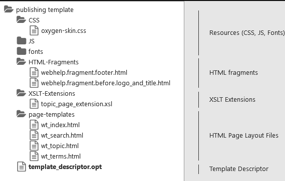
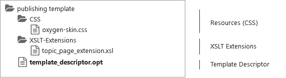

Publishing Templates
An Oxygen Publishing Template defines all aspects of the layout and styles for output obtained from the following transformation scenarios: WebHelp Responsive DITA Map PDF - based on HTML5 & CSS
Some possible customization methods include:
- Add additional template resources to customize the output (such as logos, Favicons, or CSS files).
- Extend the default processing by specifying one or more XSLT extension points.
- Specify one or more transformation parameters to customize the output.
- Customize various aspects of the output through simple CSS styling.
- For WebHelp Responsive output, change the layout of the main page or topic pages by customizing which components will be displayed and where they will be positioned in the page.
Folder structure for WebHelp custom publishing.
Folder structure for PDF custom publishing.
